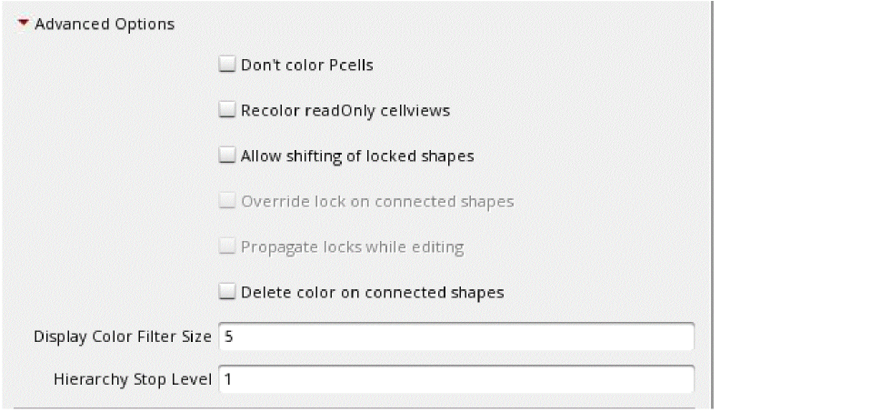

2
Getting Started
The following topics are included in this chapter:
Prerequisites
Specifying the Number of Masks Per Layer
By default, there is one mask per layer. For layers that support more than one mask, you must specify the number of masks in a column of the DFII ASCII technology file techLayers section.
When there is more than one mask for a layer, the masks are represented by colors in Virtuoso:
-
Color1 (
mask1Color) -
Color2 (
mask2Color) -
Color3 (
mask3Color) -
Color4 (
mask4Color) -
Color5 (
mask5Color) -
Color6 (
mask6Color) -
Color7 (
mask7Color) -
Color8 (
mask8Color) -
No color (
grayorgrayColor)
The color choices for a layer are dependent on the number of masks that have been set for the layer in the technology file.
For an example of how to set the number of masks for a layer in an ASCII technology file, refer to Example of ASCII Technology File Data for MPT.
Specifying Same-Mask and Diff-Mask Spacing Constraints
For active color management, same-mask and different mask (diff-mask) spacing constraints must be set in the technology database. Table 2-1 lists the supported constraints and parameters for mask coloring.
|
|
||
For detailed information on these constraints, refer to Virtuoso Technology Data Constraints Reference.
For an example of same-mask spacing constraints in an ASCII technology file, refer to Example of ASCII Technology File Data for MPT.
Specifying Coloring Purposes
By default, coloring will be applied only to shapes on the drawing and pin purposes, all user-defined purposes, and purposes for which one of these is the parent purpose. A shape on any other predefined purpose will not be colored unless its purpose is specified by the coloredPurposeTypes environment variable. Alternatively, if the explicitColoredPurposes environment variable is a non-empty string, coloring will be applied only to shapes on the purposes specified by that environment variable; in this case, the coloredPurposeTypes environment variable will be ignored. For the list of predefined purposes, see
coloredPurposeTypesexplicitColoredPurposesExample of ASCII Technology File Data for MPT
- The number of masks per layer is set for each layer that has more than one mask.
-
The member constraint groups,
minEndOfLineSpacingAndSameMaskCG,minSpacingTableAndSameMaskCG, andminViaSpacingAndSameMaskCG,are referenced in the foundry constraint group.
First, the number of masks per layer is set.
Next, the member constraint groups are created.
The minEndOfLineSpacingAndSameMaskCG member group sets the minEndOfLineSpacing constraint for end-to-end and end-to-side same-mask spacing ANDed with the foundry minEndOfLineSpacing rule.
The minSpacingTableAndSameMaskCG member group sets the minSpacing constraint for side-to-side and corner-to-corner same-mask spacing ANDed with the foundry minSpacing rules.
The minViaSpacingAndSameMaskCG member group sets the minViaSpacing constraint for via-to-via same-mask spacing ANDed with the foundry minViaSpacing rules.
Finally, the member groups are specified in the foundry constraint group.
;;; Specification of member constraint groups in the foundry constraint group
;( group [override] )
;( ----- ------------ )
( "foundry" nil
memberConstraintGroups(
; listed in order of precedence
"minEndOfLineSpacingAndSameMaskCG"
"minSpacingTableAndSameMaskCG"
"minViaSpacingAndSameMaskCG"
); memberConstraintGroups
Customizing Your Environment
There are a number of factors that determine how data will be displayed and handled, and which Virtuoso Multi-Patterning Technology GUI elements will appear. These factors can be set using environment variables, SKILL functions, and the Multiple Patterning Options form.
Shapes can be colored two ways:
- Manually using the Virtuoso tools described in Interactive Coloring in Layout
-
Automatically using the multiple patterning color engine
The color engine can automatically color connected shapes on the same layer and change the color of shapes to avoid same-mask spacing violations.
This section includes the following topics:
- Enabling the Multiple Patterning Color Engine
- Using the Multiple Patterning Options Form
- Customizing Displayed Coloring
Enabling the Multiple Patterning Color Engine
By default, the color engine is not enabled.
-
Do one of the following:
mptActivate( t )- Use the Multiple Patterning toolbar, as described in Turning the Multiple Patterning Color Engine On and Off.
- Set the coloring method, as described in Setting the Coloring Method.
Setting the Coloring Method
The coloring method applies when the multiple patterning color engine is enabled and can be set globally for a session, and by layer for a technology database or a cellview. The valid coloring methods are: interactive and managed. For both of these methods, the color engine automatically colors connected shapes on the same layer. When the coloring method is managed, the color engine can also change the color of shapes to avoid same-mask spacing violations.
Global Coloring Method
To set the global coloring method for the session, do one of the following:
-
Type the following in the CIW input line or in your
.cdsinitfile:mptSetDefaultColoringMethod(
where t_coloringMethod ist_coloringMethod)"interactive"or"managed".
For example,mptSetDefaultColoringMethod(
"managed" ) - Specify the Default Coloring Method, as described in Using the Multiple Patterning Options Form.
Layer Coloring Method
To set the coloring method for a layer,
-
Type the following in the CIW input line or in your
.cdsinitfile.mptSetLayerColoringMethod(
where d_objID is the object identifier for the cellview or the technology database, l_layers is a list of layers, and t_coloringMethod isd_objID l_layers t_coloringMethod)"interactive"or"managed".
Coloring Method Precedence
- By default, the global coloring method is used for all layers.
- The layer coloring method for the technology database takes precedence over the global coloring method.
- The layer coloring method for a cellview takes precedence over the layer coloring method for the technology database.
Getting the Coloring Method
To get the global default coloring method, see the Default Coloring Method, as described in Using the Multiple Patterning Options Form, or use the mptGetDefaultColoringMethod SKILL function.
t_coloringMethod = mptGetDefaultColoringMethod()
where t_coloringMethod is "interactive" or "managed".
To get the coloring method for a layer, use the mptGetLayerColoringMethod SKILL function.
t_coloringMethod= mptGetLayerColoringMethod(d_cellviewID t_layerName)
where d_cellviewID is the object identifier for the cellview, t_layerName is the layer name and t_coloringMethod is "interactive" or "managed".
To get the coloring method for the session, the design, and the layers for which the coloring method is set, use the mptGetLayerColoringMethod SKILL function.
In the following example, the output is shown in blue.
mptGetLayerColoringMethod( cv )
Session coloring method : interactive
Design coloring : interactive
Layer Metal2: managed
t
Using the Multiple Patterning Options Form
To change the default multiple patterning environment variable settings:
-
Choose Options – Multiple Patterning.
The Multiple Patterning Options form appears.

-
Choose the Default Coloring Method.
The coloring method applies only when the color engine is enabled. For both interactive and managed coloring methods, the color engine automatically colors connected shapes on the same layer. When the coloring method is managed, the color engine can also change the color of shapes to avoid same-mask spacing violations. For information on how this setting affects coloring, see Using the Multiple Patterning Color Engine. -
Choose the Default Shape Assignment.
- gray: Shapes are not colored.
- layerDefault: Shapes are assigned to the default color for the layer.
- random: Shapes are randomly assigned to a valid mask color for the layer.
-
asIs:
- Shapes with a color assignment are unchanged unless a color violation exists. If a color violation exists, the color engine can change the color of a shape.
- Shapes without a color assignment but that are same-mask spacing or less from another same-layer shape are colored using the layer default color, if set, or randomly colored. Otherwise, gray shapes remain gray.
-
Choose whether to Maintain color while copying.
When enabled, the coloring information from the source objects is copied as-is to the corresponding destination objects when copying or using Make Cell. -
Choose whether to Propagate locks to connected shapes.
When enabled, locks are automatically propagated to connected shapes when the lock is initiated from the Multiple Patterning toolbar. For more information on this option, see Color Locking on Connected Shapes. -
To specify Advanced Options, click the expand (triangle) button.
The Advanced Options appear.
- Choose Don’t color Pcells to prevent the recoloring of Pcells when running ReColor All or Update Color from the Multiple Patterning toolbar or using the mptReColor or mptUpdateColor SKILL function.
- Choose Recolor readOnly cellviews to recolor read-only cellviews when running ReColor All or Update Color from the Multiple Patterning toolbar or using the mptReColor or mptUpdateColor SKILL function. If not selected, only editable cellviews are recolored by those Multiple Patterning toolbar and SKILL functions.
- Choose Allow shifting of locked shapes to allow shifting of color-locked shapes. By default, shapes must be unlocked before shifting colors.
- Choose Override lock on connected shapes to allow color-locked shapes to change color to avoid color conflicts with connected shapes when a lock is initiated from the Multiple Patterning toolbar. By default, color-locked shapes cannot change color to avoid color conflicts. For more information on this option, see Color Locking on Connected Shapes.
- Choose Propagate locks while editing to automatically propagate locks to connected shapes on the same layer while editing. When this option is disabled and shapes are connected while editing (for example, when a shape is moved to connect to another shape), only the color of the shape can be propagated. When this option is enabled, the color state (lock) can also be propagated. For more information on this option, see Color Locking on Connected Shapes.
- Choose Delete color on connected shapes to delete the color on the shapes connected to the selected shape
- Specify Display Color Filter Size for the minimum shape size, in pixels, for which the color of the shape will be displayed. The color of shapes smaller than this size will not be displayed.
-
Specify Hierarchy Stop Level for the level to which shapes will be considered when coloring. A value of
1considers only top-level and level-1 shapes. A value of0considers only shapes on the current level.
- Click OK or Apply.
The environment variables that are supported by the Multiple Patterning Options form are listed in the following table.
| Field | Environment Variable | Default |
|---|---|---|
For more information on other MPT environment variables, see List of Virtuoso MPT Environment Variables.
Customizing Displayed Coloring
The default coloring is shown in Color Representations. You can customize the coloring for Multiple Patterning data by defining color display packets that are sub-packets for the layer-purpose pair (LPP).
-
In the
techDisplayssection of the ASCII technology file, specify the packet name of the layer-purpose pair of interest. -
Use the following names for the sub-packets in the display.drf file, where the coloring information is specified.
Displaying Colored Shapes
When custom coloring is specified, colored shapes are displayed using the merged colored and uncolored display packets. In the following example, the uncolored packet and the mask1Color unlocked packet are shown graphically with the resultant colored shape.
To display colored shapes using only the colored display packets, set the mergeColoredPacket environment variable to nil.
Example
techDisplays(
;( LayerName Purpose Packet …)
( Metal1 drawing M1_drawing …)
( Metal1 blockage M1_blockage …)
( Via1 drawing V1_drawing …)
…
) ;techDisplays
drDefinePacket(
;(DispName PacketName Stipple LineStyle Fill Outline [FillStyle])
(display M1_drawing hLine solid blue blue outlineStipple)
(display M1_drawing_c1 stipple0 solid red red outlineStipple)
(display M1_drawing_c2 stipple0 solid blue green outlineStipple)
(display M1_drawing_c2L stipple0 thickLine green green outlineStipple)
(display M1_blockage hLine solid blue blue outlineStipple)
(display M1_blockage_c1 hLine solid blue red outlineStipple)
(display M1_blockage_c2 hLine solid blue iceblue outlineStipple)
(display M1_blockage_black hLine solid blue lilac outlineStipple)
(display M1_blockage_multi hLine solid blue purple outlineStipple)
(display V1_drawing solid thickLine orange orange X)
(display V1_drawing_cl solid thickLine orange red outlineStipple)
(display V1_drawing_c2 solid thickLine orange green outlineStipple)
…
)
There is no display packet specified for M1_drawing_c1L. Therefore, the default mask1Color locked display packet is used which has a thick red outline with no stipple.
The graphical representations for shapes using this display.drf for the two mergeColoredPacket environment variable settings are shown below.
Return to top